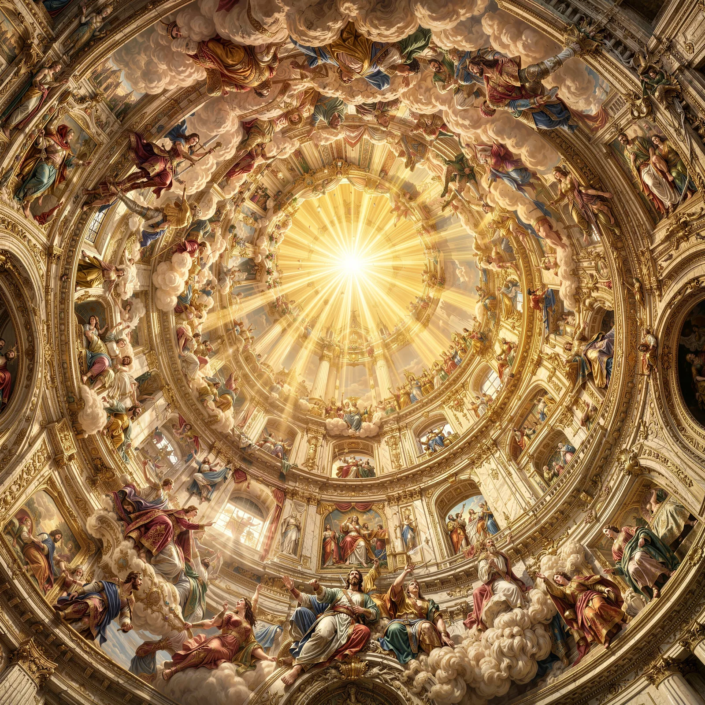
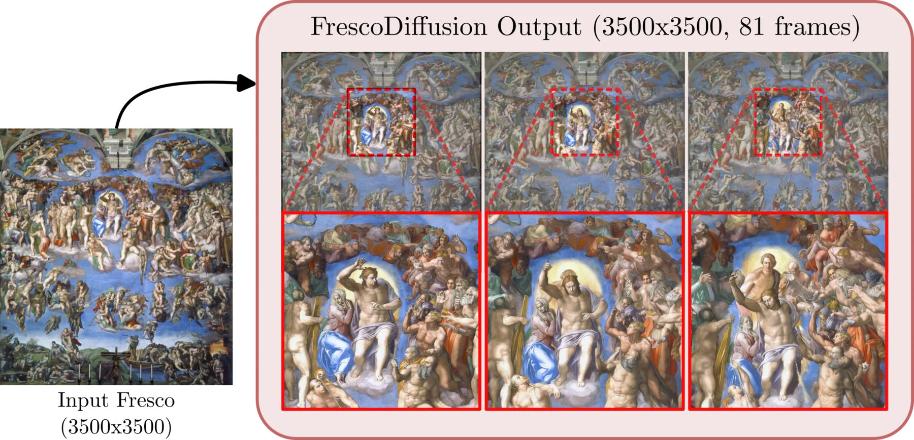
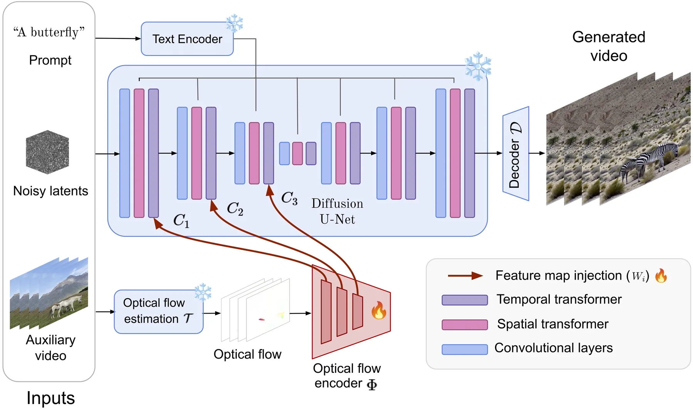

AI4VA Workshop · ECCV 2026
JoLT
Joint Latent Trajectories for Context-Guided High-Resolution Tiled Generation
Publications
A simple index of our available publication websites.

AI4VA Workshop · ECCV 2026
Joint Latent Trajectories for Context-Guided High-Resolution Tiled Generation


CVEU Workshop · CVPR 2025
Optical Flow based Motion Conditioning for Video Diffusion Models